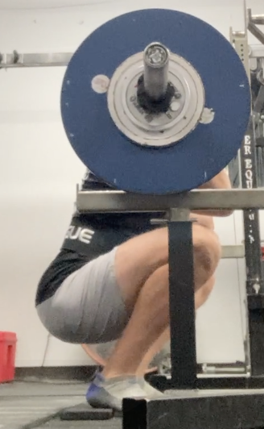
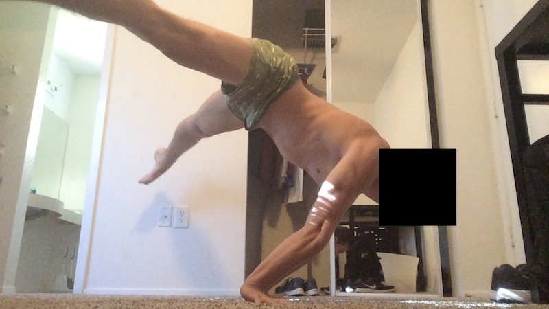
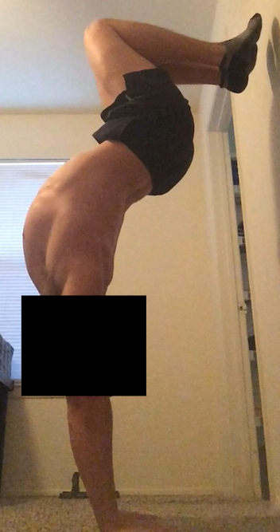

Many of my physical pastimes are no longer available to me in the way they once were. I can't deadlift heavy anymore; I ruined that when I did something to my back in May 2020 while deadlifting heavy. I can't squat ass-to-grass anymore; I ruined that when I did something to my knee in December 2020 while ATG squatting. I can't run long distances anymore; I ruined that when I developed compartment syndrome in 2014 while putting way too much mileage on my legs. I can't do big vert hikes or climbs anymore; I ruined that over the course of years while my knees degraded. I can't do as advanced handbalancing anymore; I ruined that in September 2019 when I crashed hard on my bike and lost shoulder mobility. I can't lift or ride mountain bike trails right now (hopefully not anymore); I ruined that when I injured my elbow in March 2025.

All of these brought me immense joy and comfort. They were things I enjoyed for both the process and end result. They led to achievements I took pride in or could relate to others about. They were excuses for social activity or travel or alone time. And now they are effectively relics of the past, memories I can reflect back on or pictures to look at when I'm feeling nostalgic, forlorn, or envious.

It feels like my mind is next. My choice of physical activities that don't involve one of the above injuries is rapidly dwindling.
Some things I've accepted or found substitutes for, like split squats for squatting or RDLs for deadlifts. Some things I can potentially get surgery for to get back to normal, like my elbow or lower leg. Some things will continue to taunt me, like mountain biking or handbalancing.
